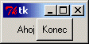
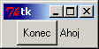
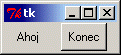
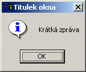
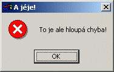
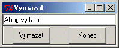
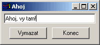

Níže uvedený text pochází z prvního vydání. Nad tímto textem se nachází aktuální stav po revizi směřující k druhému vydání.
Následující téma se věnuje nejdříve způsobu výstavby programu s grafickým uživatelským rozhraním (GUI) v obecném smyslu. Poté se zaměříme na to, jak se pro tento účel používá rodná nástrojová sada systému Python pro tvorbu grafického uživatelského rozhraní — Tkinter. Nečekejte, že půjde o dokonalou referenční příručku pro Tkinter. Nejedná se dokonce ani o ucelenou učebnici. Velmi dobrá a detailní učebnice, která se tomuto tématu věnuje, již existuje. Odkaz na ni naleznete na webovských stránkách systému Python. Tato kapitola se vás spíše bude snažit provést základy programování grafického uživatelského rozhraní (GUI), seznámí vás s jeho základními prvky a způsobem jejich použití. Podíváme se také na to, jak nám může při výstavbě aplikace s grafickým uživatelským rozhraním pomoci objektově orientované programování.
Ze všeho nejdříve bych rád řekl, že se zde nenaučíte nic nového, co se týká programování. Programování grafického uživatelského rozhraní je stejné jako jakýkoliv jiný druh programování. Můžete používat posloupnosti příkazů, cykly, větvení a moduly stejně, jak jsme si ukázali dříve. Čím se programování grafického uživatelského rozhraní obvykle liší je to, že obvykle používáme nějakou sadu nástrojů (toolkit) a to nás nutí postupovat v souladu se vzory, které do návrhu sady nástrojů vnesl její tvůrce. Každá nová sada nástrojů definuje své aplikační programátorské rozhraní (API) a množinu návrhových pravidel, které se vy, jako programátor, musíte naučit. A právě to je ten důvod, proč se většina programátorů snaží tvořit standardy na základě pouze několika nástrojových sad, které jsou dostupné pro více programovacích jazyků. Zvládnutí nové nástrojové sady (toolkit [túlkit]) bývá mnohem obtížnější, než zvládnutí nového programovacího jazyka.
Většina programovacích jazyků, které se používají pro vytváření aplikací s okny, bývá dodávána spolu s toolkitem. (Jde obvykle o tenkou vrstvu nad nejjednoduššími nástroji, které jsou zabudovány přímo do systému, který okna podporuje.) Příkladem mohou být Visual Basic, Delphi (Kylix) a Visual C++/.NET.
Java se od nich odlišuje tím, že se jazyk dodává s jeho vlastním grafickým toolkitem (nazývá se Swing). Ten je podporován na každé platformě, kde může běžet Java — což jsou téměř všechny platformy.
Poznámka překladatele: VB, Delphi jsou jazyky s podporou Rapid prototyping, resource, nástroje, podpora pro okna uvnitř jazyka. Visual C++ v podstatě standardní překladač jazyka C++ s některými nestandardními rozšířeními. .NET je jazykově nezávislá, objektově orientovaná platforma, kde část pro okna je jen částí. Longhorn (2005/2006) bude překrývat celou množinu funkcí jádra systému (kompatibilita). .Net jazykově neutrální, jazyky CLI, CLR se podobá Java runtime, WindowForms lze přirovnat k Swingu, ale je jazykově nezávislý, C# lze přirovnat k Javě. Celkově má .Net blíže k jádru systému. Stručné vysvětlení ponechat zde, detaily do cztuttrn.
Existují ale i další toolkity, které můžete pro konkrétní operační systém (Unix, Mac, Windows, atd.) získat samostatně. Jejich součástí jsou obvykle adaptéry, které umožňují jejich použití z různých jazyků. Některé z nich jsou komerční, ale řada z nich je volně dostupná (freeware). Jako příklad uveďme GT/K, Qt, Tk. Všechny mají své webové stránky. Vyzkoušejte například:
V toolkitech Qt a GT/k je napsána většina linuxových aplikací. Oba jsou pro nekomerční použití dostupné zdarma. (To znamená, že je můžete volně používat, pokud nechcete své programy prodávat za účelem výdělku.) Pokud chcete, můžete pro Qt získat i komerční licenci.
U jazyka Python se za standardní prostředí pro tvorbu grafického uživatelského rozhraní považuje Tkinter (je součástí instalace). Prostředí Tkinter je založeno na Tk, což je velmi starý toolkit, dostupný pro více operačních systémů. A právě na tuto nástrojovou sadu se podíváme blíže. Její verze jsou k dispozici i pro jazyky Tcl a Perl.
Principy, na kterých je toolkit Tk založen, se od ostatních nástrojových sad mírně liší. Proto si na závěr uvedeme stručný přehled jiného populárního nástroje pro tvorbu grafického uživatelského rozhraní v systému Python (a také v jazycích C/C++), který je založen na obvyklejších přístupech. Nejdříve si ale uveďme obecné principy.
Jak už jsme se dříve několikrát zmínili, přirozenou vlastností aplikací s grafickým uživatelským rozhraním je to, že jsou téměř vždy řízeny událostmi. Pokud si nevzpomínáte, co se tím myslí, zopakujte si téma událostmi řízeného programování.
Předpokládám, že z uživatelského hlediska již grafické uživatelské rozhraní znáte. Zaměříme se na to, jak takové programy fungují z hlediska programátora. Nebudeme zabíhat do takových detailů, jak se například tvoří rozsáhlá a složitá grafická uživatelská rozhraní s mnoha okny, rozhraní pro práci s více dokumenty (MDI) a podobně. Přidržíme se takových základů, jako je vytváření jednoduchého okna aplikace s nějakými popisnými texty, s tlačítky, prvky pro vstup textu a s okny pro zobrazování zpráv (message box).
Nejdříve si zkontrolujme naši slovní zásobu. Programování grafického uživatelského rozhraní používá svou vlastní sadu programátorských pojmů. Nejběžnější s nich jsou uvedeny v následující tabulce:
| Pojem | Vysvětlení |
|---|---|
| Okno (Window) | Plocha na obrazovce, která je ovládána aplikací. Okna mají obvykle obdélníkový tvar, ale některá prostředí pro tvorbu grafického uživatelského rozhraní dovolují použití i jiných tvarů. Okna mohou obsahovat další okna. Často je každý ovládací prvek grafického uživatelského rozhraní tvořen svým vlastním oknem. |
| Ovládací prvek (Control) | Ovládací prvek je objekt grafického uživatelského rozhraní, který se používá pro ovládání aplikace. Ovládací prvky mají určité vlastnosti a obvykle generují nějaké události. Ovládací prvky obvykle souvisejí s odpovídajícími objekty na aplikační úrovni a jejich události jsou svázány s metodami aplikačních objektů. Při výskytu události se tedy provede jedna z odpovídajících metod. Prostředí pro tvorbu grafického uživatelského rozhraní obvykle poskytuje mechanismus, kterým se vazba mezi událostí a metodou ustanoví. |
| Widget | Ovládací prvky mají někdy viditelnou podobu. Některé ovládací prvky (jako třeba časovače) sice mohou být spojeny s nějakým oknem, ale samy o sobě nejsou viditelné. Prvky typu widget tvoří tu podmnožinu ovládacích prvků, které jsou viditelné a se kterými může uživatel nebo programátor manipulovat. Ukážeme si použití následujících prvků typu widget:
Jinde v této učebnici jsou použity další prvky, kterými se ale v této kapitole nebudeme zabývat:
A nakonec si uveďme prvky, kterými se nebudeme zabývat vůbec:
Poznámka překladatele: Protože pro pojem widget nemáme dostatečně stručný český ekvivalent, překládám jej v zájmu dobré čitelnosti textu jako ovládací prvek, i když jsem si vědom, že tento pojem je obecnější, než v případě anglického originálu. Pokud by mohly vzniknout nejasnosti kolem charakteru prvku nebo pokud chci naznačit, co obsahoval originální text, uvádím slovo widget jako součást opisu, kterým obcházím nutnost jeho skloňování. V některých případech slovo widget uvádím v závorkách. |
| Rámec (Frame) | Jde o prvek typu widget, který se používá k seskupení dalších prvků typu widget dohromady. Rámec se často používá jako reprezentant celého okna. Uvnitř rámce se mohou nacházet další rámce. |
| Předpis pro rozložení prvků (Layout) | Ovládací prvky jsou uvnitř rámce umístěny podle určitého předpisu. Ten může být definován různým způsobem. Buď se používají souřadnice odpovídající pixelům na obrazovce, nebo se poloha určuje relativně vůči jiným prvkům (zarovnání vlevo, nahoru, atd.), nebo se využívá uspořádání do mřížky nebo do tabulky. Použití souřadnicového systému je sice snadno srozumitelné, ale obtížně se používá například v situaci, kdy dochází ke změnám rozměrů okna. Pokud se umístění prvků předepisuje souřadnicemi, pak by začátečníci měli používat raději okna, u kterých nelze měnit rozměry. |
| Potomek (Child) | Při tvorbě aplikací s grafickým uživatelským rozhraním často vzniká hierarchické uspořádání ovládacích prvků. Rámec na nejvyšší úrovni, který představuje okno aplikace, se skládá z podrámců, které obsahují další rámce nebo ovládací prvky. Vazby mezi ovládacími prvky si můžeme zobrazit jako stromovou strukturu, ve které má každý ovládací prvek nadřazen jeden rodičovský prvek a několik potomků (podřízených prvků). Ve skutečnosti je tato struktura závislostí přímo uložena v jednotlivých prvcích (prvek si udržuje odkazy na své podřízené prvky — potomky), takže programátor — nebo častěji samo prostředí grafického uživatelského rozhraní — může provádět některé akce nad ovládacím prvkem a všemi jeho potomky najednou. |
V této sekci vytvoříme přes příkazový řádek systému Python jednoduchá okna a ovládací prvky (widget). Poznamenejme, že aplikaci, která využívá Tkinter, nemůžeme spolehlivě spouštět z prostředí IDLE, protože IDLE samotné je aplikací, která Tkinter využívá. Z IDLE samozřejmě můžeme použít jeho editor a vytvořit v něm zdrojové texty, ale výsledek musíme spustit z příkazového řádku operačního systému. Uživatelé prostředku Pythonwin naopak takovou aplikaci spouštět mohou, protože Pythonwin používá jinou nástrojovou sadu pro tvorbu grafického uživatelského rozhraní — MFC (Microsoft Foundation Classes). Nicméně i v prostředí Pythonwin můžeme u tkinterovských aplikací pozorovat jisté neočekávané projevy chování. Proto zde raději použijeme příkazový řádek systému Python, který máme k dispozici po spuštění interpretu jazyka Python prostředky operačního systému (v DOSovém okně).
Mezi první požadavky každého tkinterovského programu patří importování
jmen ovládacích prvků. Mohli byste samozřejmě importovat jen modul, ale
velice rychle byste se unavili tím, že byste před každé jméno museli
připisovat Tkinter.
Tento příkaz vytvoří ovládací prvek na nejvyšší úrovni hierarchie našich
ovládacích prvků. Všechny ostatní ovladací prvky budou vytvořeny jako jeho
potomci. Povšimněte si, že se zobrazilo nové prázdné okno s textem
tk v titulku okna, s ikonou Tk a s obvyklou sadou ovládacích
tlačítek (zmenšení do ikony, zvětšení přes celou obrazovku, atd.). Tak, jak
budeme aplikaci postupně vytvářet, budeme do tohoto okna přidávat další
prvky.
['_tclCommands', 'children', 'master', 'tk']
Funkce dir nám ukáže všechna jména, která jsou zadanému
argumentu známa. Můžeme ji použít i pro moduly, ale v tomto případě se
chceme podívat na vnitřek objektu top, což je instance třídy
Tk. Jde o jeho atributy. Povšimněte si zejména atributů
children a master, která zachycují vazby v
hierarchii ovládacích prvků. Povšimněte si také atributu
_tclCommands, který má svůj původ ve skutečnosti — jak si
můžete vzpomenout —, že Tkinter je vytvořen nad nástrojovou sadou
systému Tcl, která se jmenuje Tk.
Poznámka překladatele: Vypsaný seznam jmen je ve skutečnosti mnohem delší a popíše vám celou obrazovku — přinejmenším u verze Python 2.2.
Vytvoří se ovládací prvek (widget) Frame, ve kterém budou
umístěny ovládací prvky, které budeme používat. Při vytváření instance
Frame je jako první argument (a v tomto případě jediný) použit
top. Tím říkáme, že F bude ovládací prvek,
vytvořený jako potomek ovládacího prvku top.
Povšimněte si, že po provedení tohoto příkazu se okno Tk scvrkne na
velikost přidaného ovládacího prvku třídy Frame. Ten je v
současnosti prázdný, takže okno je teď velmi malé. Metoda
pack() aktivuje správce rozložení (Layout Manager),
který je znám jako packer (pakovač, stlačovač). Ten se při
jednoduchých rozloženích prvků používá velmi snadno, ale s tím, jak se
rozložení prvků stává složitějším, začíná být poněkud neohrabaný. Pro tyto
chvíle se jej budeme držet — snadno se používá. Povšimněte si,
že ovládací prvky (widget) nebudou v naší aplikaci vidět až do té doby, než
provedeme jejich "spakování" (nebo použijeme jinou metodu správce rozložení
prvků).
Tímto příkazem vytvoříme nový objekt lHello jako instanci
třídy Label. Rodičovským (nadřízeným) ovládacím prvkem je
F a atributu text přiřazujeme hodnotu "Ahoj,
vy tam!". Konstruktory objektů modulu Tkinter mívají obvykle mnoho
parametrů (každý z nich má přednastavenou hodnotu). Všimněte si, že se jim
často předávají argumenty způsobem, kdy využíváme možnosti určení
příslušného parametru jménem. (Srovnejte to s častějším, pozičním způsobem předávání argumentů, kdy
udáváme pouze hodnotu parametru, ale nikoliv jméno. V takovém případě musíme
hodnotu uvést na správné pozici.) Povšimněte si rovněž, že objekt
není dosud viditelný, protože jsme dosud neprovedli "spakování".
Nakonec si uveďme poznámku ke konvenci pro volbu jména: Před jméno
Hello jsem přidal malé l jako Label,
které má připomínat význam objektu. Stejně jako u ostatních konvencí pro
volbu jména je dodržování této konvence věcí vašeho názoru. Podle mě je její
dodržování užitečné.
Poznámka překladatele: V souvislosti s tvorbou programů pro první verze operačního systému Microsoft Windows byl vypracován celý systém předpon přidávaných ke jménům proměnných, funkcí a dalších prvků. Je znám jako maďarská notace. Podrobnosti můžete najít v Charles Simonyi: "Hungarian notation". V poslední době ovšem převládá názor, že používání podobné notace může způsobovat více problémů, než užitku. Týká se to především větších projektů a jazyků s velmi silnou typovou kontrolou, jako je například jazyk C++. Používejte proto podobných konvencí s mírou. Vhodná volba identifikátoru (tj. jména) může potřebu používání podobných předpon zmírnit.
Teď už výsledek předchozích příkazů vidíme. Měl by vypadat nějak takto:
Objektu třídy Label můžeme parametry konstruktoru předepsat
i další vlastnosti, jako je například typ a barva písma. Tyto vlastnosti si
ale můžeme zpřístupnit voláním metody configure, kterou
ovládací prvky (widget) modulu Tkinter podporují:
Zpráva se změnila. Bylo to docela snadné, že? Použití metody
configure je výhodné především v případech, kdy chcete změnit
několik vlastností najednou, protože je můžeme najednou předepsat jako její
argumenty. Pokud ovšem chcete změnit jen jedinou vlastnost, jako jsme to
učinili v naposledy uvedeném případě, můžeme se k objektům chovat, jako
kdyby se jednalo o slovníky (dictionary, vyhledávací tabulky). Takže můžeme
psát:
... je to kratší a snad i srozumitelnější.
Objekty typu Label (popisné texty) patří k docela nudným
ovládacím prvkům. Mohou pouze zobrazit text, který je určen jen ke čtení
— i když v různých barvách, různým písmem a v různé velikosti. (Ve
skutečnosti je lze použít i pro zobrazení jednoduché grafiky, ale jak to
udělat si ukážeme až později.)
Dříve než se podíváme na další typ objektu, zbývá nám předvést ještě
jednu věc — způsob, jak můžeme nastavit titulek okna. Dosáhneme toho
použitím metody ovládacího prvku na vrcholu hierarchie, objektu
top:
Stejného efektu jsme mohli dosáhnout přímým použitím objektu
top, ale technika, využívající přístup prostřednictvím
vlastnosti master objektu třídy Frame, bývá
užitečná — jak uvidíme později.
Tímto příkazem vytvoříme nový ovládací prvek, tlačítko (button, čti
[batn]). Tlačítko nese nápis "Konec" a je spojeno s příkazem
F.quit. Povšimněte si, že předáváme jméno metody. Neprovádíme
volání této metody, protože jsme za jméno nepřidali závorky. To znamená, že
se předává objekt s charakterem funkce ve smyslu chápaném v jazyce Python.
Může to být vestavěná metoda modulu Tkinter, jako v tomto případě, nebo
jakákoliv jiná, námi definovaná funkce. Funkce nebo metoda nesmí mít žádné
argumenty. Metoda quit, podobně jako metoda pack,
je definována v bázové třídě, kterou dědí všechny ovládací prvky modulu
Tkinter.
Metoda pack opět zajistí zviditelnění tlačítka.
Tímto odstartujeme provádění tkinterovské smyčky zpráv. Povšimněte si,
vyzývací znaky '>>> ' příkazového řádku systému Python nyní
zmizely. Podle toho poznáme, že řízení další činnosti přešlo do režie Tkinter.
Pokud stisknete tlačítko Konec, vyzývací znaky příkazového
řádku se znovu objeví, což je důkaz toho, že zafungoval náš parametr
command.
Poznamenejme, že pokud totéž provádíme z prostředí Pythonwin nebo IDLE,
může být chování odlišné. Pokud tomu tak skutečně je, zkuste dosud uvedené
příkazy zapsat do pythonovského skriptu, tedy do textového souboru s příponou
py, a spusťte jej z příkazového řádku operačního
systému.
On vlastně nastal příhodný okamžik k tomu, abychom to stejně vyzkoušeli. Když se to tak vezme, tímto způsobem se v praxi provozuje většina tkinterovských programů. Použijme klíčové příkazy z těch, o kterých jsme se zatím bavili:
from Tkinter import * # Vytvoříme samotné okno. top = Tk() F = Frame(top) F.pack() # Přidáme ovládací prvky. lHello = Label(F, text="Ahoj") lHello.pack() bQuit = Button(F, text="Konec", command=F.quit) bQuit.pack() # Spustíme smyčku událostí. top.mainloop()
Volání metody top.mainloop zahájí provádění tkinterovské
smyčky událostí. V tomto případě bude jedinou zachycenou událostí ta, která
odpovídá stisku tlačítka a která je spojena s provedením metody
F.quit. Její provedení způsobí ukončení aplikace. Vyzkoušejte
si to. Výsledek by měl vypadat takto:

Poznámka: V následujícím textu budou příklady uváděny v podobě,
jakou mají v pythonovských zdrojových souborech. Nebudou tedy uvozeny
řetězcem '>>> ', který se vypisuje na začátku vstupního
řádku interpretu jazyka Python.
V této části bych se rád zaměřil na to, jak Tkinter umísťuje prvky
(widget) uvnitř okna. V předchozím textu jsme si již ukázali prvky typu
Frame, Label a Button. Ty nám pro
potřeby této části textu postačí. V předchozím příkladu jsme používali
metodu prvku (widget) zvanou pack k umístění prvku uvnitř jeho
rodičovského okna. Technicky vzato jsme tím aktivovali správce rozložení
prvků systému Tk, kterému se říká packer. Úkolem správce
rozložení prvků (Layout Manager) je určení nejlepšího rozložení prvků, které
je založeno na nápovědě předepsané programátorem a na omezeních, jako je
například velikost okna, kterou ovlivňuje uživatel. Některé typy správců
rozložení prvků používají přesné umístění uvnitř okna, které je předepsáno v
pixelech[1]. S tímto
přístupem se běžně setkáte v systému Microsoft Windows, například při
používání programátorského prostředí Visual Basic. V modulu Tkinter
dosáhneme téhož při použití správce rozložení prvků, kterému se říká
placer (doslova "umísťovač") — činíme tak voláním jeho metody
place. V této učebnici se uvedeným správcem rozložení zabývat
nebudeme, protože obvykle bývá lepší, když si vybereme jeden ze zbývajících,
inteligentnějších správců rozložení prvků. Jejich použití zbavuje
programátory starosti o to, co se stane, když okno změní své rozměry.
V Tkinter je nejjednodušším správcem rozložení prvků takzvaný
packer, který jsme již používali v předchozím textu.
Packer, pokud mu neřekneme jinak, jednoduše skládá ovládací prvky
(widget) jeden na druhý. Z hlediska běžných ovládacích prvků tuto vlastnost
využijeme velmi zřídka, ale pokud sestavujeme rozhraní naší aplikace z
rámečků (Frame), pak můžeme považovat skládání rámečků na sebe
za docela rozumný přístup. Ostatní ovládací prvky můžeme do rámečků
umísťovat buď s využitím správce rozložení typu packer nebo uvnitř
rámečku podle potřeby využijeme vlastností jiného správce rozložení. Příklad
použití takového přístupu můžete najít v případové
studii.
Ale dokonce i tak jednoduchý správce rozložení prvků, jako je
packer, poskytuje celou řadu voleb. Například uvedením argumentu
side (strana, do strany, stranově) můžeme předepsat uspořádání
našich prvků ve vodorovném, místo ve svislém směru:
lHello.pack(side="left") bQuit.pack(side="left")
Tyto příkazy přinutí prvky, aby se skládaly zleva (left [left], znamená levý nebo vlevo).
Takže první prvek (typu Label) se objeví úplně vlevo. Za ním
následuje další prvek (typu Button). Pokud uvedené řádky
příkladu upravíme uvedeným způsobem, bude výsledek vypadat takto:

A pokud změníme hodnotu "left" na "right" ([rajt] znamená pravý,
vpravo), pak se prvek typu Label objeví úplně vpravo a
prvek typu Button vlevo od něj, jinými slovy, co nejvíc vpravo, jak je to za
aktuálního stavu možné. Výsledek bude vypadat takto:

Jedna z věcí, které si můžete všimnout je, že to nevypadá moc hezky,
protože pvky jsou příliš nalepeny na sebe. Správce packer nám ale
nabízí další parametry, které nám umožní vypořádat se i s touto situací.
Snadno použitelné jsou takzvané vycpávky (také výplně; v originále
padding, čti pading). Můžeme předepsat vodorovné vycpávky
(padx) a svislé vycpávky (pady). Jejich hodnoty se
udávají v pixelech. Doplňme tedy do našeho příkladu vodorovné vycpávky:
lHello.pack(side="left", padx=10) bQuit.pack(side='left', padx=10)
Výsledek by měl vypadat nějak takto:

Pokud zkusíte měnit velikost okna, můžete pozorovat, že oba prvky
zachovávají svou vzájemnou pozici, ale zůstávají uprostřed okna. Proč tomu
tak je? Vždyť jsme je přeci nechali poskládat zleva? Odpověď zní: prvky jsme
poskládali dovnitř obalujícího rámečku (Frame), ale samotný
rámeček jsme do okna vložili (metodou pack) bez uvedení
parametru side. Takže rámeček je jako celek v okně umístěn
nahoře uprostřed, což odpovídá základnímu chování správce rozložení typu
packer. Pokud bychom chtěli, aby byly prvky umístěny na požadované
straně okna, musíme i při volání metody pack pro objekt typu
Frame uvést vhodnou hodnotu parametru side:
F.pack(side='left')
Nyní si můžete všimnout, že při změně svislého rozměru okna zůstávají prvky uprostřed výšky okna — jde opět o základní chování správce rozložení typu packer.
Nechám už na vás, abyste si sami pohráli s hodnotami parametrů
padx a pady. Pozorujte vliv jejich různých hodnot
a kombinací. Zejména parametry side a
padx/pady umožňují při použití správce rozložení
typu packer poměrně pružné možnosti umísťování prvků typu widget.
Existují ještě další parametry. Každý z nich přidává další, jemnější podobu
řízení umístění. Detaily hledejte na referenčních stránkách modulu
Tkinter.
Modul Tkinter poskytuje ještě další správce rozložení, které jsou známy
jako grid (mžížka) a placer (umísťovač). Použití správce
typu grid aktivujeme voláním metody grid() místo
pack(). V případě použití správce typu placer voláme
místo metody pack() metodu place(). Každá z
uvedených metod má svou sadu parametrů, ale protože se zde zabýváme pouze
správcem typu packer, budete muset detaily hledat v učebnici a v
referenční příručce Tkinter. Zmíním se jen o tom, že správce typu
grid zařídí uspořádání prvků do mřížky (jaké překvapení!) uvnitř
okna. Jeho použití je užitečné například v případě dialogových oken se
zarovnanými poli pro vkládání textu. U správce typu placer můžeme
použít buď pevné souřadnice v pixelech nebo relativní souřadnice uvnitř
okna. Posledně zmiňovaná možnost umožňuje, aby vložený prvek měnil své
rozměry součaně s pvkem například tak, aby vždy zabíral například
75 procent svislého prostoru. Tento správce umožňuje řešit zvláštní
návrhové požadavky, ale vyžaduje to od nás, abychom si předem vše
naplánovali. Vřele vám doporučuji, abyste si pro tyto účely obstarali
čtverečkovaný papír, tužku a gumu.
U prvku (widget) typu Frame můžeme ve skutečnosti ovlivnit
několik užitečných vlastností. Když se to tak vezme, není špatné, když
můžeme prvky uživatelského rozhraní z logického hlediska obalit rámečkem,
ale někdy navíc chceme také něco vidět. Hodí se nám to zejména v případech
seskupení ovládacích prvků jako jsou přepínací tlačítka (radio buttons) nebo
zaškrtávací pole voleb (check boxes). Třída Frame tento problém
řeší tím, že poskytuje vlastnost relief — tak jako mnoho
dalších prvků Tk typu widget. Relief může nabývat libovolné z následujících
hodnot: sunken ([sankn]; ponořený, vmáčknutý),
raised ([reizd]; vystouplý, vyzvednutý), groove
([grúv]; drážka, vyrytý) ridge ([ridž]; hřbet, geometrický opak
drážky) nebo flat ([flat]; plochý). Vyzkoušejme u našeho
dialogového okna hodnotu sunken. Jednoduše změníme řádek, na
kterém se vytváří prvek třídy Frame:
F = Frame(top, relief="sunken", border=1)
Poznámka 1: Musíme uvést i nenulovou hodnotu parametru
border ([bódr]; hranice). Pokud tak neučiníme, bude sice plocha
prvku typu Frame ponořená, ale hranice mezi ponořenou a okolní plochou bude
neviditelná, takže nezpozorujeme žádný rozdíl.
Poznámka 2: … o tom, proč tloušťku hranice (border) neuvádíme v uvozovkách. Znalost toho, zda máme použít uvozovky kolem hodnoty parametru a kdy je vynechávat, patří k jedné z matoucích vlastností Tk. Obecně se dá říci, že u číselných nebo jednoznakových hodnot můžeme uvozovky vynechávat. Pokud jde o směs číslic a písmen nebo o řetězec, musíme použít uvozovky. Podobný problém spočívá v tom, kdy použít malá nebo velká písmena. Naneštěstí zde neexistuje jednoduchý návod. Musíte se prostě učit ze zkušeností. V případě chyby Python často v chybových hlášeních vypisuje seznam přípustných hodnot parametrů.
Poznámka překladatele k poznámce 2: Aby se zvýšila čitelnost
zdrojových textů, jsou pro vyhrazené řetězcové argumenty definovány
řetězcové proměnné, které se používají v roli předdefinovaných konstant.
Jejich jména jsou psána velkými písmeny. Naleznete je v souboru
Tkconstants.py. Zde definovaná jména jsou zviditelněna v rámci
importu Tkinter. Ve zdrojových textech proto místo
F = Frame(top, relief="sunken", border=1)
můžeme psát:
F = Frame(top, relief=SUNKEN, border=1)
Podobně můžeme místo side="left" psát side=LEFT
a podobně. Uvedené obraty můžete pozorovat dále v textu.
Další věc, které si můžete všimnout, je ta, že Frame
nevyplňuje okno. Můžeme to napravit použitím dalšího parametru správce typu
packer, parameru fill ([fil]; vyplnit). Při volání
metody pack() tedy zapíšeme:
F.pack(fill=X)
Uvedený parametr způsobí vyplnění prostoru ve vodorovném směru. Vyplnění
prostoru ve svislém směru zajistíme použitím fill=Y. Mezi běžné
požadavky patří vyplnění prostoru v obou směrech. Pro tyto případy máme k
dispozici hodnotu parametru BOTH. (Nechtějte po mě, abych zde normálními
písmenky zapisoval výslovnost. Každopádně slovo both znamená
oba — tedy vyplňování v obou směrech.)
F.pack(fill=BOTH)
Výsledek by měl vypadat takto:

Podívejme se nyní na prvek (widget) pro třídy Entry
([entry]; vstup). Jde o známý prvek pro zadávání jednořádkového textu. Řada
jeho metod se shoduje s metodami propracovanějšího prvku (widget) třídy
Text, ale tím se zde zabývat nebudeme. Přesto doufám, že
používáním metod prvku třídy Entry získáte dobré základy pro
pozdější experimenty s prvkem třídy Text.
Vrátíme se opět k našemu programu, který zobrazuje Ahoj, vy
tam!, přidáme do něj prvek pro vkládání textu do samostatného prvku
typu Frame a také tlačítko, které umí vymazat text, který do
pole vepisujeme. Tím si ukážeme nejen to, jak se dá vytvořit a používat
prvek typu Entry, ale také jak můžeme definovat své vlastní
funkce pro ošetření (zpracování) událostí a jak je navážeme na ovládací
prvky.
from Tkinter import * # Nejdříve vytvoříme funkci pro ošetření události. def evVymazat(): eTxt.delete(0, END) # Vytvoříme hierarchicky nejvyšší okno a rámeček. top = Tk() F = Frame(top) F.pack(expand=True) # Nyní vytvoříme rámeček s polem pro vstup textu. fVstup = Frame(F, border=1) eTxt = Entry(fVstup) fVstup.pack(side=TOP, expand=True) eTxt.pack(side=LEFT, expand=True) # Nakonec vytvoříme rámeček s tlačítky. # Pro zvýraznění jej vytvoříme jako ponořený (vmáčknutý). fTlacitka = Frame(F, relief=SUNKEN, border=1) bVymazat = Button(fTlacitka, text="Vymazat text", command=evVymazat) bVymazat.pack(side=LEFT, padx=5, pady=2) bKonec = Button(fTlacitka, text="Konec", command=F.quit) bKonec.pack(side=LEFT, padx=5, pady=2) fTlacitka.pack(side=TOP, expand=True) # Nyní spustíme smyčku zpráv. F.mainloop()
Povšimněte si, že jméno funkce pro ošetření události
(evVymazat) opět předáváme jako hodnotu argumentu
command při vytváření tlačítka bVymazat.
Povšimněte si také konvence pro vytváření jména evXXX funkce
pro ošetření události — dáváme jí najevo vazbu s odpovídajícím prvkem
typu widget.
Po spuštění programu obdržíme následující výsledek:

Pokud něco napíšeme do vstupního pole a poté stiskneme tlačítko
"Vymazat text", bude napsaný text opět odstraněn.
Doposud jsme pro propojení pythonovských funkcí s událostmi tlačítek
— jako prvků grafického uživatelského rozhraní — používali
vlastnost tlačítek zvanou command. Někdy ovšem potřebujeme
zajistit přesněji a přímo vyjádřený způsob ovládání. Chceme například
zachytit událost stisku zvláštní kombinace kláves. Můžeme toho dosáhnout
použitím funkce bind ([bajnd]; svázat, spojit), kterou lze
přímo vyjádřit vazbu mezi nějakou událostí pythonovskou funkcí.
Do předchozího příkladu dodefinujeme "horkou klávesu" (hot key) —
dejme tomu Ctrl-c —, která rovněž způsobí vymazání textu.
Potřebujeme tedy navázat kombinaci kláves Ctrl-c na stejnou
funkci pro obsluhu událostí, na kterou se váže událost tlačítka
Vymazat. Máme tu ale jednu neočekávanou nepříjemnost. Parametru
command jsme museli předávat jméno funkce, která nesměla mít
žádné parametry. Pokud chceme použít k provedení stejné činnosti funkci
bind, musí navazovaná funkce definovat jeden parametr. Proto
musíme vytvořit novou funkci, která přebírá jeden argument a volá
evVymazat. Za definici funkce evVymazat proto
přidejme následující definici:
def evHorkaKlavesa(udalost):
evVymazat()
A za definici prvku typu Entry přidejme následující
řádek:
# Definice klávesy je citlivá na velikost písmen.
eTxt.bind("<Control-c>", evHorkaKlavesa)
Spusťte znovu upravený program. Nyní můžete text vymazat buď stiskem
příslušného tlačítka nebo stiskem kombinace kláves Ctrl-c.
Funkci bind můžeme použít i pro zachycení takových událostí,
jako jsou kliknutí myši, událost získání nebo ztráty aktivity okna (fokus)
nebo dokonce událost, která doprovází situaci, kdy se okno stane viditelným.
Více informací na toto téma naleznete v dokumentaci k Tkinter. Nejsložitější
obvykle bývá zjistit podobu zápisu požadované události.
Chceme-li uživatelům našeho programu zobrazit krátkou zprávu, můžeme k
tomu využít prvek zvaný Message Box ([mesidž box]; doslova okno se
zprávou). Při využití Tk je to velmi snadné. Za tímto účelem můžeme použít
funkce modulu tkMessageBox například takto:
import tkMessageBox
tkMessageBox.showinfo("Titulek okna", "Krátká zpráva")
Pro zobrazování oken chybových hlášení, varování, dotazů typu Ano/Ne nebo
OK/Storno existují také další funkce nazvané showXXX ([šou];
ukaž). Příslušná okna se odlišují různými ikonami a tlačítky. Dvě poslední
zmíněné varianty používají místo názvu tvaru showXXX názvy
askXXX ([ásk]; zeptej se) a vracejí hodnotu, která říká, jaké
tlačítko uživatel stiskl:
vysledek = tkMessageBox.askokcancel("Co zvolíte?", "Chcete zastavit činnost?")
print vysledek
Poznámka překladatele k českým textům s
diakritikou: Více podrobností o problémech hledejte v poznámce, ke vstupu českých znaků,
která se vztahuje k části učebnice, kde jsme se zabývali vstupem z klávesnice. Naleznete v ní ovšem i údaje
k používání českých textů pro prvky
grafického uživatelského rozhraní. Stručně: pro zobrazení českého textu
v oknech Tk můžeme využít převodu do kódování Unicode. Využijeme k tomu
funkci unicode():
# -*- coding: cp1250 -*-
import tkMessageBox
vysledek = tkMessageBox.askokcancel(
unicode("Co zvolíte?", "cp1250"),
unicode("Chcete zastavit činnost?", "cp1250"))
print vysledek
První komentářový řádek říká, že zdrojový text byl programu byl zapsán v
kódování cp1250 — je známé také jako
windows-1250. Řádek se uvádí hned na začátku skriptu, obvykle
jako první nebo druhý. (V unixovém světě se na prvním řádku uvádí jiný typ
komentáře, který pro skripty s příznakem spustitelnosti určuje jméno
programu, který má skript interpretovat.) Zvláštní tvar řádku s
posloupnostmi -*- souvisí s konvencemi, které byly v minulosti
zavedeny u některých známých textových editorů. Pokud tento řádek neuvedeme,
pak se při spuštění skriptu (přinejmenším od verze Pythonu 2.3) setkáme s
varovným hlášením, že byl v řetězci použit znak s kódem větším, než 127 a
přitom nebylo upřesněno použité kódování.
Abych v dalších příkladech nemusel vymýšlet texty, které vypadají česky a přitom neobsahují znaky s diakritikou, budu tento obrat používat. V praxi je ale výhodnější nadefinovat si obalující funkce nebo metody tříd (případně odvozené třídy), které převody kódování ukrývají a při psaní zdrojového textu se nám to pak jeví, jako kdyby Python uměl odjakživa česky.
A takto vypadají některá okna se zprávami:



V úvodních částech této učebnice jsme srovnávali Python s Tcl. Proto
považuji za rozumné, abychom si ukázali, jak by úvodní příklad s prvky typu
Label a Button vypadal v originální podobě zapsané
v Tcl/Tk:
Label .lHello -text "Ahoj, vy tam!" Button .bHello -text Konec -command "exit" wm title . Ahoj pack .lHello .bHello
Jak sami vidíte, zápis je velmi stručný. Hierarchie prvků typu widget je
vyjadřována s využitím konvence jejich pojmenování, kde prvek se jménem
'.' stojí na nejvyšší úrovni. Jak už je v Tcl zvykem, prvky
typu widget jsou vyjadřovány příkazy, kterým jsou požadované vlastnosti
předány formou argumentů. Doufám, že je vám převod parametrů prvků do podoby
pojmenovaných argumentů v jazyce Python docela jasný. Pokud tedy při
programování s Tkinter potřebujete vyřešit nějaké problémy, můžete použít
dokumentaci systému Tcl/Tk (které je velmi mnoho). Přepis do Tkinter je
většinou zřejmý.
Dál už se v tomto místě do Tcl/Tk pouštět nebudeme. V následujícím textu si ukážeme běžně používanou techniku pro zabalení aplikací s grafickým uživatelským rozhraním využívajících Tkinter do podoby objektů.
Při programování aplikací s grafickým uživatelským rozhraním se běžně
celá aplikace obaluje do podoby třídy. To vyvolává otázku, jak do této
struktury tříd napasujeme prvky typu widget modulu Tkinter? Na výběr máme
dvě možnosti. Buď se rozhodneme pro odvození třídy aplikace od tkinterovské
třídy Frame, nebo uložíme referenci na hierarchicky nejvyšší
okno do členské proměnné. Posledně zmíněný přístup se běžně používá i u
jiných prostředků (toolkit), takže jej použijeme i my. Pokud byste chtěli
vidět použití prvního ze zmiňovaných přístupů, vraťte se k příkladu v
kapitole Událostmi řízené
programování. (Zmíněný příklad mimo jiné ukazuje základy použití
neuvěřitelně univerzálního tkinterovského prvku (widget) třídy
Text.)
Poznámka překladatele: Přístup, kdy ukládáme referenci na hierarchicky nejvyšší okno odpovídá obecnému doporučení při objektově orientovaném návrhu aplikací. To říká, že bychom měli dávat přednost kompozici před dědičností. Jinými slovy to znamená, že pokud si můžeme vybrat, zda spojit funkčnost dvou tříd dohromady, bývá lepší, když nějak spojíme objekty dvou jednodušších tříd, než kdybychom vytvářeli jednu novou, složitější třídu. Ve svém důsledku to vede k vyšší pružnosti při budoucích úpravách návrhu aplikace. Návrh bývá také přehlednější. Dědičnost (tj. odvozování jedné třídy objektů z jiné) bychom měli používat především tehdy, když pouze upravujeme funkčnost bázové třídy pro speciální účel. Neměli bychom ji používat, když chceme propojit funkčnosti dvou tříd s odlišným účelem.
Výše uvedený příklad, využívající vstupní pole typu Entry,
tlačítko Vymazat a tlačítko Konec, převedeme do objektově orientované
podoby. Nejdříve si vytvoříme třídu aplikace a v rámci jejího konstruktoru
poskládáme viditelné části grafického uživatelského rozhraní.
Referenci na výsledný prvek typu Frame přiřadíme do
self.hlavniOkno. Tím lze zajistit přístup k hierarchicky
nejvyššímu prvku typu Frame ostatním metodám třídy. Ostatní
prvky (widget), ke kterým bychom mohli chtít přistupovat (jako je například
pole typu Entry) jsou podobným způsobem přiřazeny do členských
proměnných instance třídy Frame. Při využití popsané techniky
se funkce pro zpracování událostí stanou metodami aplikační třídy a každá z
těchto metod může přistupovat k libovolným datovým členům aplikace (ačkoliv
v tomto případě žádné datové členy nevytváříme) prostřednictvím reference
self. Tím zajistíme přirozené propojení prvků grafického
uživatelského rozhraní s ostatními aplikačními objekty:
from Tkinter import *
class AplikaceVymazat:
def __init__(self, rodic=0):
self.hlavniOkno = Frame(rodic)
# Vytvoříme widget třídy Entry
self.vstup = Entry(self.hlavniOkno)
self.vstup.insert(0, "Ahoj, vy tam!")
self.vstup.pack(fill=X)
# Nyní přidáme dvě tlačítka a použijeme efekt drážky.
fTlacitka = Frame(self.hlavniOkno, border=2, relief=GROOVE)
bVymazat = Button(fTlacitka, text="Vymazat",
width=8, height=1, command=self.vymazatText)
bKonec = Button(fTlacitka, text="Konec",
width=8, height=1, command=self.hlavniOkno.quit)
bVymazat.pack(side=LEFT, padx=15, pady=1)
bKonec.pack(side=RIGHT, padx=15, pady=1)
fTlacitka.pack(fill=X)
self.hlavniOkno.pack()
# Nastavíme nadpis okna.
self.hlavniOkno.master.title("Vymazat")
def vymazatText(self):
self.vstup.delete(0, END)
aplikace = AplikaceVymazat()
aplikace.hlavniOkno.mainloop()
Výsledek vypadá takto:

Stojí za povšimnutí, že výsledek výrazně připomíná předchozí verzi příkladu. Trochu jsme upravili spodní rámeček, aby získal pěknější podobu s drážkou okolo. Nastavili jsme také šířky tlačítek, abychom se přiblížili vzhledu, který bude mít další příklad, využívající nadstavbu wxPython.
Do podoby objektu samozřejmě můžeme zabalit nejen hlavní aplikaci. Mohli
bychom vytvořit třídu s prvkem typu Frame, který obaluje
standardní sadu tlačítek. Tu pak můžeme využívat například při vytváření
dialogových oken. Mohli bychom dokonce vytvořit třídy pro celé dialogy a ty pak
používat v několika projektech. Nebo bychom mohli rozšířit schopnosti
standardních prvků typu widget definicí odvozených tříd. Například bychom
mohli vytvořit tlačítko, které mění barvu v závislosti na svém stavu. Něco
takového provádí modul Python Mega Widgets (PMW), což je rozšíření
Tkinter — PMW si můžete stáhnout (download).
Pro práci s grafickým uživatelským rozhraním je k dispozici mnoho dalších
nástrojů (toolkit), ale jedním z nejpopulárnějších je wxPython. Ten je pro
změnu pythonovskou obálkou kolem nástroje wxWindows pro jazyk C++. Z
obecného hlediska je wxPython mnohem typičtějším nástrojem pro práci s
grafickým uživatelským rozhraním, než je Tkinter. V základní podobě také
poskytuje více standardní funkčnosti, než Tk. Poskytuje prvky jako tooltip
([túltip];
bublina s textem pro prvek ležící pod kurzorem myši),
stavová lišta (status bar) a další, které si v Tkinter musíte vytvořit sami.
Pomocí wxPython si znovu přepíšeme dříve uvedený příklad "Ahoj, vy
tam!", který používá prvky typu Label a
Button.
Co se týká wxPython, nepůjdeme příliš do detailů. Pokud se chcete dozvědět více o tom, jak wxPython pracuje, budete si muset stáhnout instalační balík z webovských stránek wxPython.
Obecně se dá říci, že tato nástrojová sada (toolkit) definuje pracovní rámec (framework), který nám dovolí vytvářet okna, umísťovat do nich ovládací prvky a navazovat na ně metody, tj. definovat, které metody se mají volat pro obsluhu událostí těchto ovládacích prvků. wxPython je plně objektově orientován, takže byste pro obsluhu událostí měli používat opravdu metody a ne funkce. Příklad použití vypadá následovně:
from wxPython.wx import * # --- Definujeme uživatelský rámeček (Frame), který se stane hlavním oknem. --- class RamecekAhoj(wxFrame): def __init__(self, rodic, ID, titulek, pozice, velikost): wxFrame.__init__(self, rodic, ID, titulek, pozice, velikost) # Použití panelu zajistí správné pozadí. panel = wxPanel(self, -1) # Nyní vytvoříme text a tlačítka. self.tAhoj = wxTextCtrl(panel, -1, "Ahoj, vy tam!", (3,3), (185,22)) tlacitko = wxButton(panel, 10, "Vymazat", (15, 32)) tlacitko = wxButton(panel, 20, "Konec", (100, 32)) # Nyní svážeme tlačítka s obslužnými metodami. EVT_BUTTON(self, 10, self.OnVymazat) EVT_BUTTON(self, 20, self.OnKonec) # Následují naše metody pro obsluhu událostí. def OnVymazat(self, udalost): self.tAhoj.Clear() def OnKonec(self, udalost): self.Destroy() # --- Definujeme aplikační objekt. --- # Poznamenejme, že všechny wxPythonovské programy MUSÍ definovat # třídu aplikačního objektu jako třídu odvozenou od wxApp. class AplikaceAhoj(wxApp): def OnInit(self): frame = RamecekAhoj(NULL, -1, "Ahoj", (200,50), (200,90)) frame.Show(True) # self.setTopWindow(frame) return True # Vytvoříme instanci třídy a spustíme smyčku zpráv. AplikaceAhoj().MainLoop()
Výsledek vypadá takto:

Za povšimnutí stojí používání konvence pro pojmenování metod, které mají
být volány z rámce (framework) wxPython — OnXxxx. (Předložku On bychom
pro tento případ mohli doslova překládat jako Při.)
Povšimněte si také funkcí EVT_XXX, kterými se definuje vazba na
události prvků. (Zkratka
EVT pochází z anglického event [ivent], tj.
událost.) Podobných funkcí existuje celá rodina. Systém wxPython
využívá celou řadu ovládacích prvků (widget) — mnohem více, než je
tomu u Tkinter. Lze jimi realizovat poměrně náročná grafická uživatelská
rozhraní. Naneštěstí se u nich používá převážně rozmisťovací schéma založené
na souřadnicích, které budete již po chvíli vnímat jako velmi únavné.
Existuje sice možnost použití schématu, které se velmi podobá tkinterovskému
správci rozložení zvanému packer, ale tento prostředek není příliš
dobře dokumentován. Pro tvorbu grafického uživatelského rozhraní existuje
komerčně dostupný nástroj. Doufejme, že se brzy objeví i nějaká zdarma
dostupná alternativa.
Za zmínku stojí to, že posledně uvedený příklad a velmi podobný, dříve uvedený příklad psaný v Tkinter, mají přibližně stejný počet řádků (v anglickém originále jich je 19 pro Tkinter a 20 pro wxPython — pokud nepočítáme komentářové a prázdné řádky. V českém překladu jsem se o dosažení přesně stejného počtu řádků nesnažil.)
Shrneme-li to, pak v případě, kdy chcete k nějakému textově orientovanému nástroji rychle vytvořit jednoduché grafické uživatelské rozhraní, pak by měl Tkinter vyhovět vašim požadavkům při současné minimalizaci nutného úsilí. Pokud chcete vytvářet aplikace s plnohodnotným grafickým uživatelským rozhraním, které mají být použitelné na více platformách, pak byste se měli blíže seznámit s wxPython.
Mezi další nástroje pro budování grafického uživatelského rozhraní patří MFC, .NET a jsou zde samozřejmě letité curses, což je vlastně grafické uživatelské rozhraní realizované v textovém prostředí. Poznámka k .NET.
Poznámka překladatele: Knihovna curses Využívá možností textového režimu zobrazovacích adaptérů, kdy lze předepisovat zobrazování znaků na daných pozicích textové obrazovky, určení barev takto zobrazeného textu, a další. Pokud si pod tímto popisem nedovedete nic představit, vzpomeňte si na klasickou verzi aplikace Norton Commander, jeho kvalitního windowsovského soupeře zvaného FAR, případně linuxovskou variantu zvanou Midnight Commander (mc). Můžete si představit i libovolnou klasickou dosovou aplikaci, která používala okénka tvořená z rámečkových znaků. Aplikace s podobným vzhledem vznikaly dříve, než se objevily první verze Windows. Knihovna curses ale má svůj původ v unixovém světě, z jehož promyšlených abstrakcí tvůrci Windows velmi často čerpají. Někdy to jde tak daleko, že někteří napůl žertem říkají, že až budou jednou MS Windows dokončené, bude to nejlépe dokumentovaný Unix na světě.
Řadu věcí, které jsme se naučili v souvislosti s Tkinter, lze aplikovat na všechny ze zmíněných prostředků pro tvorbu grafického uživatelského rozhraní. Každý z nich má ale své charakterické vlastnosti, zvláštnosti, podivnosti a neduhy. Vyberte si některý z nich, naučte se jej a užívejte si bláznivého světa návrhu grafického uživatelského rozhraní. Na závěr bych se měl zmínit, že pro řadu těchto nástrojů existují grafické prostředky pro návrh a tvorbu uživatelského rozhraní. Jako příklad uveďme Blackadder pro Qt a Glade pro GTK. Pro wxPython se o zjednodušení procesu výstavby grafického uživatelského rozhraní snaží prostředek zvaný Python Card.
To nám prozatím stačí. Nechceme zde vytvářet novou referenční příručku pro Tkinter. Cílem bylo pouze uvedení nezbytných věcí k tomu, abyste mohli učinit první kroky. Odkazy na další zdroje informací o Tkinter naleznete v sekci Tkinter na webovských stránkách systému Python.
Problematikou používání Tcl/Tk se také zabývá několik knih. Přinejmenším jedna se věnuje přímo Tkinter. K Tkinter se nicméně vrátíme v případové studii, kde si ukážeme jeden ze způsobů, jak obalit program s dávkovým charakterem grafickým uživatelským rozhraním. Tím se docílí zlepšení použitelnosti původního programu.
Pokud vás napadne, co by se dalo na překladu této kapitoly vylepšit, zašlete e-mail odklepnutím Tím budou do dopisu automaticky vloženy informace o tomto HTML dokumentu.
$Id: cztutgui.html,v 1.6 2004/08/31 11:55:13 prikryl Exp $